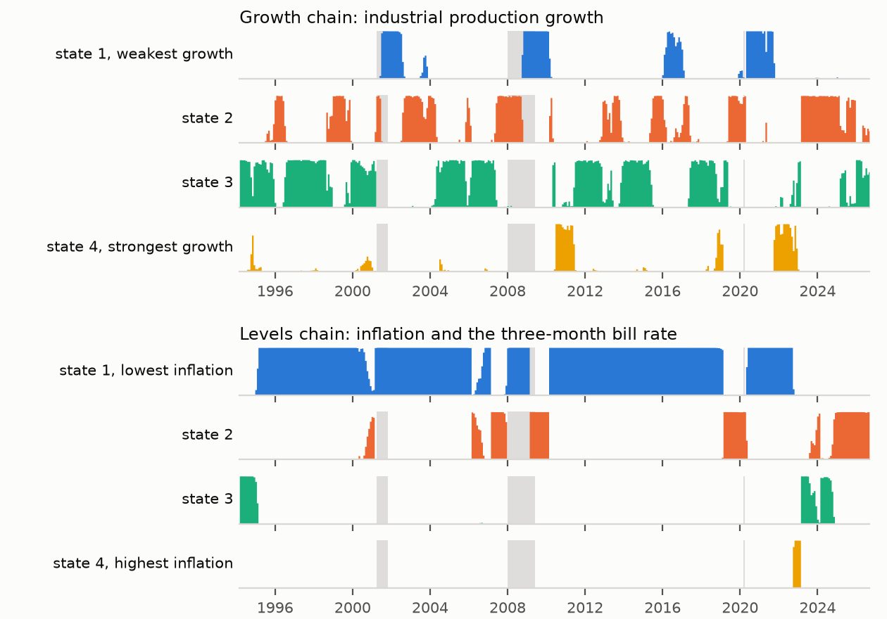

Research · Probability forecasting · September 2026
When to ship the historical average
How far ahead can probability forecasts of the US economy beat the historical average? We forecast ten yes-or-no questions (recession, inflation, interest rates, unemployment, the yield curve and output) from a model of economic regimes, walked it forward month by month from 1994 to 2026 on data as it was published, and judged it by rules committed before any result was seen.
What we found
Six findings, in plain language
One year ahead, the forecasts beat the average
Across the ten questions they remove on average about a quarter of the historical average's squared error.
The advantage fades after about four years
Beyond that, as far as three decades of data can tell, the historical average does as well, and it is what we ship.
Most of the skill is persistence
A forecaster with no regimes, which only tracks whether each condition holds now, does at least as well as the regime model at every horizon.
Regimes help where the model looks
They add information on inflation and on interest rates near zero, and nothing on unemployment or recessions, which the model never observes.
Turning points are met, not foreseen
The forecasts rose once the 2021 inflation surge showed up in published data, and registered the 2001 recession only after it had ended.
Honesty was expensive
Closing look-ahead leaks, and later adopting a fair benchmark, each took the one-year verdict away. Each time a pre-registered improvement earned it back.
The question in the title
How far ahead do the forecasts beat the average?
Brier skill measures how much of the historical average's squared error a forecast removes: zero is no better, one would be perfect. We scored every horizon from one month to ten years. Move across the chart to read any month.
Shaded bands are 90% intervals from a block bootstrap over forecast dates. Beyond 60 months fewer than 5.5 independent observations remain, so nothing is read from the curves there. Dashed lines mark the last month up to which each regime forecaster beats the average without a break.
Where the skill comes from
Most of it is knowing where the economy is now
The condition chain knows only whether each question's condition holds today and how often such conditions start and stop. It matches or beats the regime model at every horizon. The forecast that ships is an equal blend of the two, adopted through a pre-registered experiment. It is never significantly better than the chain alone, and it is better calibrated than the regime model.
Blend minus chain, at every horizon
Above zero, the blend is better. Red ticks mark horizons where the whole 90% interval is below zero.
One year ahead, question by question
Skill against the historical average. Questions run from those the model observes to those it never does.
Explore
Thirty-two years of one-year forecasts
Each point is the probability the model gave, on that date, that the event would happen within the following year. Shaded dates are those where it did. Pick a question, and compare the forecast that ships with its two halves and with the historical average.
Forecasts from the walk-forward backtest, each made with only the data published by its date. Recent dates have no outcome yet: their year has not ended.
Registered forward
Today's forecasts
Released with the paper, from data as of 1 August 2026. At one year the blend ships; at five and ten years the historical average does, because no forecaster beats it there. Every forecast is registered with its date and will be scored as it resolves; the first one-year claims resolve on 1 July 2027.
Method
How it works
Only what was published
Every training panel is built as of its forecast date from archival vintages, and recession months count only once the NBER announced them.
Two hidden Markov chains
One chain for output growth and one for inflation with interest rates: sixteen joint regimes, refitted every year on data up to that date.
Rates per regime, projected forward
How often each condition holds, starts and persists in each regime, combined with where the regimes are headed.
Decided in advance
Five acceptance gates, a fair benchmark, a persistence chain to beat, and a perturbation audit for look-ahead.

How honesty changed the answer
One-year skill at each step. No threshold of the rule committed on 8 September was moved.
- 8 SepRule 0001 committed before any backtest; first run with one regime chain and forecasts from 1971.+0.232ship the model
- 9 SepTwo look-ahead paths closed: the number of regimes had been chosen on today's data, and 41% of dates had used revised prices.+0.2128ship the average
- 15 SepA perturbation audit found the benchmark counting outcomes before they were published. Fixed.+0.2154ship the average
- 20 SepTwo regime chains adopted after a pre-registered slate of six ideas.+0.2744ship the model
- 21 SepRecession months dated by their announcement.+0.2673ship the model
- 29 SepA fair benchmark over the model's own sample, and a regime-free chain that beats the model.+0.1786ship the average
- 29 SepEqual blend with the chain adopted from a pre-registered experiment.+0.2401ship the model
Skill is against the average since each series began for the first five rows, and against the average over the model's own sample for the last two.
Paper
Read the full account
Written for readers without a background in economics or forecasting: a primer on probability forecasts and how to score them, the data and model, the rules committed in advance, every result, what the method cannot do, and appendices with every table behind the figures. Every number in it is generated from, or checked against, the committed record.
@misc{xie2026ship,
author = {Xie, Jeddy},
title = {When to Ship the Historical Average: A Pre-Registered,
Point-in-Time Test of Regime-Based Probability
Forecasts for the {US} Economy},
year = {2026},
howpublished = {\url{https://jeddy-xie.github.io/forecasting-the-future/}}
}
Go deeper
The record behind every number
Data sources
Every series is public. Each link opens the live, interactive chart at the source.